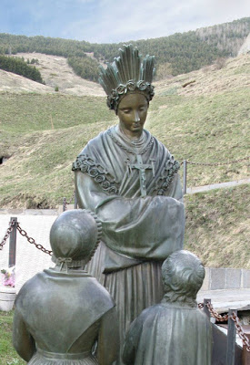
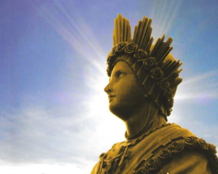
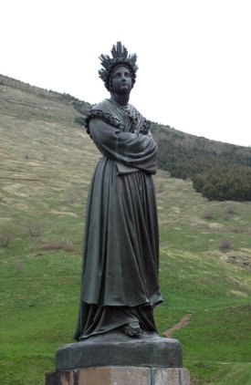

O SEGREDO
DE LA SALETTE

Por obediência
ao Sumo Pontífice, em face de todo tipo de confusão reinante na época, os
videntes concordaram em divulgar a Mensagem, exclusivamente a ele, antes do ano
de 1858, conforme a determinação de NOSSA SENHORA. Assim, no dia 3 de Julho de
1851, Maximin apresentou sua redação e três dias após, Mélanie apresentou a sua
redação do SEGREDO. Mas, pelo fato de alguns trechos terem ficado obscuros, em
1853, Monsenhor Ginoulhiac, Bispo de Grenoble, ordenou que eles escrevessem
novamente toda a Mensagem. As redações ficaram arquivadas sob total sigilo no
Vaticano.
Pela vontade da VIRGEM MARIA, em 1858, ano da Aparição de NOSSA SENHORA em
Lourdes, os videntes ficaram liberados da obrigação de manter silêncio sobre o
SEGREDO de La Salette, e então, deram a público os detalhes e enviaram ao Papa
Pio IX, outra redação do Segredo mais aprimorada que as anteriores.
O SEGREDO
1- “Mélanie, o que vou lhe dizer agora não ficará sempre em segredo, podereis publicá-lo em 1858. Os sacerdotes, ministros de MEU FILHO, pela sua má vida, sua irreverência e impiedade na celebração dos santos mistérios, pelo amor ao dinheiro, as honrarias e aos prazeres, tornaram-se cloacas de impureza. Sim, os sacerdotes atraem a vingança e a vingança paira sobre suas cabeças. Ai dos sacerdotes e das pessoas consagradas a DEUS, que pela sua infidelidade e má vida crucificam de novo MEU FILHO! Os pecados das pessoas consagradas a DEUS bradam ao Céu e clamam por vingança. E eis que a vingança está às suas portas, pois não se encontra mais uma pessoa a implorar misericórdia e perdão para o povo. Não há mais almas generosas, não há mais ninguém digno de oferecer a vítima imaculada (JESUS na Santa Missa) ao PAI ETERNO em favor do mundo. DEUS vai golpear de modo inaudito. Ai dos habitantes da Terra. DEUS vai esgotar Sua cólera, e ninguém poderá fugir a tantos males acumulados. Os chefes, os condutores do povo de DEUS negligenciaram a oração e a penitência. E o demônio obscureceu suas inteligências. Transformaram-se nessas estrelas errantes, que o velho diabo arrastará com sua cauda para fazê-las perecer. DEUS permitirá à velha serpente (o demônio) introduzir divisões entre os que reinam em todas as sociedades e em todas as famílias. Sofrer-se-ão tormentos físicos e morais. DEUS abandonará os homens a si mesmos e enviará castigos que se sucederão durante mais de trinta e cinco anos. A sociedade está na iminência dos flagelos mais terríveis e dos maiores acontecimentos. Deve-se esperar ser governada por uma chibata de ferro e beber o cálice da cólera de DEUS”.
1- Explicação – De um Censor Eclesiástico do Vaticano, que pesquisa as Manifestações Sobrenaturais e está ciente da corrupção no clero. Ele acolheu as palavras de NOSSA SENHORA, dizendo: “Lamentações deste gênero, expressas por vezes com linguagem ainda mais vibrante, não são absolutamente nenhuma novidade nos escritos dos Servos de DEUS, para os quais, se era doloroso ver a corrupção no povo, muito mais era ter que deplorá-la nos Ministros do Santuário”.
2 - “Que o Vigário de MEU FILHO, o Soberano Pontífice Pio IX, não saia mais de Roma depois do ano 1859. Mas seja firme e generoso, combata com as armas da fé e do amor. EU estarei com ele. Que ele não confie em Napoleão III. O seu coração é falso, e quando ele quiser se tornar ao mesmo tempo papa e imperador, DEUS se afastará dele. Ele é como a águia que, querendo subir sempre mais, cairá sobre a espada da qual queria se servir para obrigar os povos a o elevarem”.
2 – NOSSA SENHORA adverte, porque Napoleão foi um político astuto que ludibriava os católicos e inclusive trabalhava contra o Papa e contra a Igreja. Ele quis ser Imperador do mundo e Papa, e veja, foi parar abandonado numa ilha, um pequeno castigo para quem ousou desafiar DEUS! Também neste ano de 1859, um grande desapontamento, o inglês Charles Darwin publicou o seu livro sobre a evolução da espécie, desencadeando a mais terrível afronta contra o CRIADOR, afirmando “que o homem não é uma criação de DEUS, mas uma evolução do macaco”. Em consequência de tal absurdo e de outros, aconteceu uma real perda da fé na humanidade, principalmente daqueles que pouco conhecia e mal praticava a religião.
3 - “A Itália será punida, pela ambição de querer sacudir o jugo do SENHOR dos Senhores. Será também entregue à guerra, o sangue correrá por todo lado. As Igrejas serão fechadas ou profanadas. Os Sacerdotes e os Religiosos serão expulsos. Serão entregues à morte, e morte cruel. Vários abandonarão a fé, e o número dos Sacerdotes e Religiosos que se afastarão da verdadeira Religião será grande. Entre essas pessoas encontrar-se-ão até Bispos”.
3 – A questão se desenvolve num clima de profunda agitação política, entre a forte aspiração de construir a unidade nacional Italiana e o direito do Papa, de manter os Territórios Pontifícios. Na Toscana Italiana, depois da partida do Grão Duque Austríaco, protetor dos Papas, os evangelistas saíram da clandestinidade e impuseram o Estatuto do Governo Provisório Toscano (o mesmo de 1848), cujo artigo primeiro diz: “A Religião Católica Apostólica Romana é do Estado, não é para ser praticada. Os outros cultos que existem têm total permissão de divulgação e exercício, conforme a Lei”. Ao mesmo tempo, com o apoio popular, tropas francesas de Napoleão III e os piemonteses, entraram em guerra contra o Império Austro-Húngaro, que não queria ceder os reinos em terras italianas, controlados pelas famílias reais austríacas. Com a participação da maçonaria partiram para luta armada. A situação se agravou irremediavelmente com a Assembléia Constituinte em Roma, proclamando a República Italiana, anexando todos os territórios, inclusive aqueles do Estado Pontifício, apoderando-se violentamente das propriedades do Vaticano. Houve muita destruição e mortes, com Igrejas sendo saqueadas, sacerdotes e religiosos sendo perseguidos e mortos, causando sérios e abomináveis problemas a Igreja Católica.
4 - “Que o Papa esteja em alerta contra os fautores de milagres. Pois chegou o tempo em que os prodígios mais inesperados terão lugar sobre a Terra e nos ares”.
“No ano de 1864, Lúcifer e um grande número de demônios serão soltos do inferno. Eles abolirão a fé pouco a pouco, até nas pessoas consagradas a DEUS. Eles as cegarão de tal maneira que, salvo uma graça particular, adquirirão o espírito desses maus anjos. Várias casas religiosas perderão inteiramente a fé e perderão muitas almas”.
“Os maus livros abundarão sobre a Terra, e os espíritos das trevas espalharão por toda parte um relaxamento universal em tudo o que se refere ao serviço de DEUS. Eles terão grandíssimo poder sobre a natureza. Existirão igrejas para cultuar esses espíritos. Pessoas serão transportadas de um lugar a outro por esses espíritos maus, até sacerdotes, porque não se terão conduzido pelo bom espírito do Evangelho, que é um espírito de humildade, caridade e zelo pela glória de DEUS. Far-se-ão ressuscitar mortos e justos (quer dizer, tais mortos tomarão a figura de almas justas que viveram na Terra, para seduzir mais os homens; esses supostos mortos ressuscitados, que não serão outra coisa senão o demônio encarnado nessas figuras pregará outro evangelho contrário ao do verdadeiro JESUS CRISTO, negando a existência do Céu). Ou ainda almas de condenados. Todas essas almas aparecerão como unidas a seus corpos. Em todos os lugares haverá prodígios extraordinários, porque a verdadeira fé se apagou e uma falsa luz ilumina o mundo. Ai dos príncipes da Igreja, que então estarão ocupados apenas em amontoar riquezas acima de riquezas, salvaguardar sua autoridade e dominar com orgulho”!
4 – No ano de 1864 o espiritismo com plena força em muitos países lançou o “Livro dos Médiuns”, que é o Evangelho de JESUS segundo o espiritismo, que como é fácil de imaginar, descreve os fatos evangélicos ao seu modo, completamente distantes da realidade. Uma abominável grosseria ao nosso DEUS e SENHOR. Neste mesmo ano foi criada a Sociedade Internacional Revolucionária, também de fundo espírita, e foram publicados terríveis livros com idéias loucas e antiteistas principalmente do filósofo Nietzsche. Também a pornografia invadiu a terra com livros verdadeiramente satânicos alcançando o maior sucesso. Desde a infância até a juventude, para todos os gostos há imundície escrita por centenas de imundos que se dedicam a escrevê-las. Na segunda parte do texto, a VIRGEM MÃE faz menção dos espíritos das trevas que hoje tomam conta de corpos com ocorrência cada vez mais frequente, se observa hoje, comentários sobre centenas de ocorrências com os tais “Objetos ou Naves Voadoras Interplanetárias”, e de casos de pessoas levadas por eles. NOSSA SENHORA disse claramente que todas estas coisas vêm dos espíritos das trevas (os demônios do ar). Embora muitas pessoas acreditam como sendo visitas interplanetárias amigáveis, inclusive participam de congressos para estudar o assunto, mas, na realidade se trata de maquinações e tramas do maligno. Quanto à adoração e o culto a satanás, só nos Estados Unidos existem mais de 4.600 seitas satânicas registradas, fora as outras sem registro. Na França e mesmo na Alemanha, a feitiçaria, a magia negra e todo tipo de culto satânico tem proliferado de forma escandalosa, impressionante e assustadora. Os “milagres” hoje são tão comuns, que até pela TV se pode presenciá-los. O espiritismo de Allan Kardec, Chico Xavier e outros chefes, alcançaram tanta popularidade que através deles, propalam os seus fieis, se concretizam curas de muitos males através da “Cirurgia Espiritual” , destacando o anuncio do “poder espiritual do Mestre” , um verdadeiro “esboço do Anti-Cristo”, quando também eles afirmam que as pessoas escutarão este “filho dileto de satanás” falar em suas próprias línguas, quando na realidade, hoje já se dispõe de recursos de mídia que são capazes de reproduzir um texto em qualquer idioma. Com isso, milhares de eleitos são e serão enganados e muitos teólogos, até mesmo ditos católicos, se esforçarão por aclamar o “tal Anti-Cristo” como sendo o CRISTO Verdadeiro em sua segunda volta a Terra. Na verdade, no início, muitos católicos também acolherão as ocorrências sem se aperceberem de que se trata de enganação. Este dia está incrivelmente próximo. Os sinais indicados nos Evangelhos, especialmente no de São Mateus, capítulo 24, são claros e esclarecedores: guerras, violências de todos os tipos, fome, terremotos, falsos profetas, absurdo crescimento da iniquidade, etc.
5 – “O Vigário de meu FILHO terá muito que sofrer, porque durante algum tempo a Igreja será entregue a grandes perseguições. Será o tempo das trevas, e a Igreja passará por uma crise pavorosa. Tendo sido esquecida a santa fé em DEUS, cada indivíduo desejará guiar-se por si próprio e ser superior aos seus semelhantes. Serão abolidos os poderes civis e eclesiásticos. Toda ordem e toda justiça serão calcados aos pés. Não se verá outra coisa senão homicídios, ódio, inveja, mentira e discórdia, sem amor pela pátria e sem amor pela família. O Santo Padre sofrerá muito. EU estarei com ele até o fim, para receber o seu sacrifício. Os maus atentarão várias vezes contra sua vida sem poder abreviar seus dias, mas nem ele nem seu sucessor verão o triunfo da Igreja de DEUS”.
5 – NOSSA SENHORA prevê dias escuros para a Igreja e pessoas de bem, inclusive para os administradores que ocupam cargos importantes no Governo, na Justiça e na Igreja. ELA está se referindo aos fatos que acontecerão como prenúncio do Final dos Tempos.
6 –“Os governantes civis terão os mesmos objetivos, que consistirão em abolir e fazer desaparecer todo princípio religioso para dar lugar ao materialismo, ao ateísmo, ao espiritismo e a toda espécie de vícios”.
6 – Esta frase poderá ser uma continuação da previsão anterior, anunciada por nossa MÃE SANTÍSSIMA.
7 - “No ano 1865
ver-se-á a abominação nos lugares santos. Nos Conventos as flores da Igreja
serão apodrecidas, e o demônio tornar-se-á como que o rei 
“A França, a Itália, a Espanha e a Inglaterra estarão em guerra. O sangue correrá nas ruas, o francês combaterá contra o francês, o italiano contra o italiano. A seguir haverá uma guerra geral, que será horrorosa. Durante certo tempo DEUS não se lembrará mais da França nem da Itália, porque o Evangelho de JESUS CRISTO não será mais conhecido”.
“Os maus estenderão toda a sua malícia. Até nas casas as pessoas matar-se-ão e massacrar-se-ão mutuamente”.
7 – Os Padres Corteville e Laurentin destacam a concordância dessas descrições com o espetáculo desolador da crise que hoje a Igreja atravessa. Paulo VI chegou a classificar de “processo de autodemolição”, numa alocução aos alunos do Seminário Lombardo em 07/12/1968. O mesmo Pontífice afirmou que “por alguma fissura a fumaça de satanás penetrou no Templo de DEUS”.
A vidente Mélanie, a respeito da revelação do SEGREDO, acrescentou: “Estas coisas acontecerão quando a desordem moral seja completa sobre a Terra e o mundo esteja entregue às suas ímpias paixões, sem acrescentar datas”.
Por outro lado, os dois mencionados Padres confirmaram que desde velha data, existe um conluio internacional, preparado para destruir os Conventos, Mosteiros e a própria organização da Igreja. Pessoas de ambos os sexos são rigorosamente preparadas para entrar nas Ordens Religiosas, como qualquer vocacionado, e lá dentro do Mosteiro, do Convento ou da Clausura, deverão realizar o trabalho de destruição para o qual ele ou ela, foi devidamente instruído. Isto é real, não é fantasia.
Sobre as guerras, considerando desde aquela data de 1865 até hoje, não incluindo as menores, já aconteceram duas grandes guerras, a primeira e a segunda guerra mundial com uma destruição avassaladora e impressionante. Hoje, vemos claramente, pela instabilidade das relações internacionais, onde o interesse financeiro e o lucro são sempre colocados em primeiro lugar, um espaço aberto para os desentendimentos e as possibilidades de outros conflitos armados entre as nações.
8 - “Ao primeiro golpe da sua espada fulgurante [refere-se a DEUS], as montanhas e a natureza inteira tremerão de espanto, porque as desordens e os crimes dos homens traspassarão a abóbada celeste. Paris será queimada, e Marselha engolida [pelas águas]”.
“Várias grandes cidades serão abaladas e tragadas por tremores de terra. Crer-se-á que tudo está perdido. Só se verão homicídios, e se ouvirão apenas ruídos de armas e blasfêmias”.
8 – Toda esta profecia de NOSSA SENHORA foi anunciada e mostrada aos videntes, como se estivessem vendo os acontecimentos num imenso telão. E a MÃE DE DEUS deixou claro, tudo dependerá da conversão da humanidade, acolhendo e praticando as determinações de DEUS, ou mantendo-se indiferente. Sobre a destruição de Paris e de outras cidades, Dom Bosco em 1870, também teve um sonho profético em que viu terríveis castigos sobre Paris e Roma. Na verdade, existem outras profecias sobre a destruição de Paris e de outras cidades da Europa, que a continuar no mesmo rumo de perdição, acontecerá na chegada do Final dos Tempos.
9 - “Os justos sofrerão muito. Suas orações, sua penitência e suas lágrimas subirão até o Céu e todo o povo de DEUS pedirá perdão e misericórdia. E pedirá a Minha Ajuda e Intercessão. Então JESUS CRISTO, por um ato da Sua Justiça e da Sua grande misericórdia para com os justos, ordenará aos Seus Anjos que dêem morte a todos os Seus inimigos. De repente, os perseguidores da Igreja de JESUS CRISTO e todos aqueles entregues ao pecado perecerão, e a Terra ficará como um deserto”.
Todas as profecias mais recentes levam a crer que os fatos começarão a realizar num tempo muito curto da história da humanidade! Na verdade, serão os tempos mais terríveis que jamais existiram e que sem dúvida, nunca mais existirão, desde que o homem povoa a Terra. Ainda bem que JESUS intervirá em favor dos justos. O caos já começou a ser delineado e logo, todos os estopins serão colocados. Dificilmente acreditamos que a humanidade se converterá em grande escala, considerando a grandeza do pecado em nossos dias! Por isso mesmo, acreditamos que haverá destruições, e que só serão em menor escala, se NOSSO SENHOR decidir exercitar a SUA infinita misericórdia e incomensurável bondade.
10 – “Então será feita a paz e haverá a reconciliação de DEUS com a humanidade. JESUS CRISTO será servido, adorado e glorificado. A caridade florescerá por toda parte. Os novos reis serão o braço direito da Santa Igreja, que será forte, humilde, piedosa, pobre, zelosa e imitadora das virtudes de JESUS CRISTO. O Evangelho será pregado por toda a parte e os homens farão grandes progressos na fé, porque haverá unidade entre os operários de JESUS CRISTO e os homens viverão no temor de DEUS”.

11 – "Esta paz entre os homens não será longa. Vinte e cinco anos de safras abundantes fará a humanidade esquecer que os seus pecados são a causa de todos os males que sucedem na Terra”.
11 – Todavia, Mélanie esclareceu que essa era de paz duraria um número grande de gerações. A indefinição que possa existir na fixação real do número de anos de paz, está naturalmente ligada à fidelidade que existir. Quanto maior for à fidelidade da humanidade em relação a DEUS, mais longa será a era de paz. Habitualmente se calcula 25 anos por geração. Quantas gerações foram estimadas por Mélanie no Aviso da VIRGEM MARIA? Ela estimou 10 gerações? 20? 30? Estas estimativas correspondem respectivamente há 250 anos, 500 anos, 750 anos? Tudo depende da conversão da humanidade.
12 – “Um precursor do Anticristo, com tropas de várias nações, guerreará contra o verdadeiro CRISTO, único Salvador do mundo, derramará muito sangue e tentará aniquilar o culto de DEUS, para se fazer cultuar como se ele fosse um deus”.
“A Terra será atingida por toda espécie de flagelos (além da peste e da fome, que serão gerais). Haverá guerras até a última guerra, que será realizada pelos dez reis do Anticristo, cujo objetivo será o mesmo e serão os únicos a governarem o mundo. Antes que isto aconteça, haverá uma espécie de falsa paz no mundo. Não se pensará em outra coisa, senão em se divertir. Os maus se entregarão a toda sorte de pecados. Mas os filhos da Santa Igreja, os filhos da fé, MEUS verdadeiros imitadores, acreditarão no Amor de DEUS e nas virtudes que ME são mais caras. Felizes essas almas humildes conduzidas pelo ESPÍRITO SANTO! EU combaterei junto a elas até que atinjam a plenitude da idade”.
“A natureza exige vingança por causa dos homens e estremece de pavor, na espera do que deve acontecer a Terra emporcalhada de crimes. Tremei, ó Terra, vós que fizestes profissão de servir a JESUS CRISTO, mas que no vosso íntimo adorai a vós próprios. Tremei, pois DEUS vos entregará a seu inimigo, porque os lugares Santos estão imersos na corrupção. Muitos Conventos não são mais casas de DEUS, mas pastagens de Asmodeu e os seus [demônios]. Durante esse tempo nascerá o Anticristo de uma religiosa hebraica, uma falsa virgem que terá comunicação com a velha serpente. E o mestre da impureza, seu pai, será bispo. Ao nascer, vomitará blasfêmias e terá dentes. Numa palavra, será o diabo encarnado. Dará gritos aterrorizadores, fará prodígios, alimentar-se-á só de impurezas. Terá irmãos que, embora não sejam como ele outros demônios encarnados, serão filhos do mal. Aos doze anos eles se farão notar pelas valorosas vitórias que obterão. Logo estará cada um à testa de exércitos, assistidos por legiões do inferno”.
“As estações mudarão, a terra só dará maus frutos, os astros perderão seus movimentos regulares, a Lua não projetará senão uma débil luz avermelhada. A água e o fogo darão ao globo terrestre movimentos convulsivos e horríveis tremores de terra, que engolirão montanhas, cidades, etc.”.
“Roma perderá a fé e se tornará sede do Anticristo”.
“Os demônios do ar, junto com o Anticristo, farão grandes prodígios na terra e nos ares. E os homens se perverterão cada vez mais. DEUS tomará sob seus cuidados os fiéis servidores e os homens de boa vontade, o Evangelho será pregado por toda parte, todos os povos e todas as nações terão conhecimento da verdade”.
12 – Todo este longo texto se refere aos fatos que precederão o Final dos Tempos, e se realizarão, dentro de um número não definido de séculos.